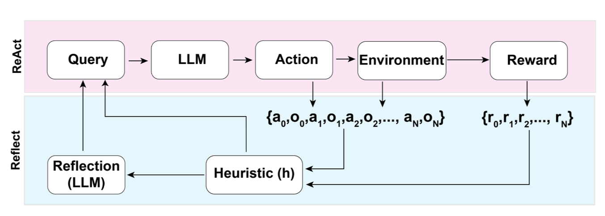

LLM Agent
대화형 Interaction에서 벗어나, Task를 수행하기 위한 LLM Agent를 소개합니다.
https://lilianweng.github.io/posts/2023-06-23-agent/ 의 내용을 공부함개요
기본적으로 Large Language Model은 OpenAI, Google 등 Product API이든, Open-Source 모델이든 대화형 형식을 갖추고 채팅을 할 수 있는 기능만을 갖추고 있습니다. 또한, 이미 학습되어 있는 지식의 한도 안에서만 답변을 할 수 있습니다. 이는 우리가 기대하는 AGI 혹은 원하는 기대효과를 가지고 동작하게 할 수 있는 도구로써의 활용과는 차이가 있습니다.
LLM Agent는 이러한 사용패턴에서 벗어나 자동화된 추론과 의사결정을 가능케하는 일종의 Engine이라고 생각할 수 있습니다. 우리가 원하는 어플리케이션은 기업 내 시스템에서의 데이터베이스에서 데이터를 가지고 와서 이를 기반으로 분석하여 답변을 내야할 수도 있고, 검색엔진을 통해 인터넷의 데이터를 가지고 와서 검색된 문서를 기반으로 답변을 만들 수 도 있어야합니다.
이러한 역할을 수행하려면, LLM이 적절한 Tool을 선택해야하고 Tool을 사용하여 수행한 결과를 다시 사용자에게 전달할 수 있어야합니다. 이러한 일을 수행하는 개체가 바로 LLM Agent라고 할 수 있습니다.
Agent System Overview

LLM 기반의 자동화 Agent 시스템에서 LLM은 일종의 두뇌역할을 하고, 다음과 같은 components들로 구성됩니다.
Planning
- Sub-goal / Decomposion
- Agent는 큰 작업을 더 작고 관리가능한 하위목표로 분해(decompose)하여 복잡한 작업을 처리할 수 있도록 합니다.
- Reflection / Refinement
- 과거 행동에 대해 자기비판과 성찰을 할 수 있고, next step을 위해 작업을 개선하여 final result의 결과를 향상시킵니다.
Memory
- Short-Term Memory
- Prompt Engineering을 Short-Term Memory로 생각하여 유용한 학습(in-context learning)으로 활용한다고 볼 수 수 있습니다.
- Long-Term Memory
- LLM이 External Database(vector db 등), 확장된 검색결과를 활용하여 장기간의 혹은 무한한 “information”을 유지하고 회상할 수 수 있는 능력을 갖게 됩니다.
Tool Use
- Pre-Training 이후에는 모델 가중치를 변경하기 어려운 상황에서 확보해야하는 추가 정보(최신 정보, Code 실행능력, source code에 대한 access 능력) 등을 사용하는 방법을 갖게 됩니다.
Planning
일반적으로 User의 Query를 수행하기 위해서는 매우 많은 작업단계들을 거쳐야합니다. Agent가 유저의 지시를 파악하여 실행할 계획을 세우는 것에서부터 출발합니다.
Decomposition
- Chain of Thought
- 복잡한 작업에 대한 모델성능을 향상시키는 표준 prompting 기법입니다. 주어진 지시문에 “Step by Step”으로 생각하라는 지시를 추가합니다.
- 큰 작업을 여러 개의 관리가능한 작업으로 변환하고, 모델의 사고 과정에 대한 해석을 볼 수 있습니다.
- Tree of Thoughts
- Thought Decomposition
- 문제를 여러 개의 “Thought” 단계로 분할합니다..
- 각 생각은 문제 해결을 향한 중간 단계를 나타냅니다.
- 생각의 단위는 몇 글자(Crosswords)부터 한 문단(Creative Writing)이 될 수 있습니다.
- LLM이 생성하고 평가할 수 있을만한 “충분히 작고 충분히 커야” 합니다.
- Thought Generator
- 현재 상태에서 가능한 다음 생각을 생성하는 개체입니다.
- 현재 주어진 tree states에서 다음 생각단계에 대한 k개의 후보 Thought를 생성하기 위한 전략을 고려합니다.
- Thought Range가 넓은 경우(Thought가 문단규모일 때)
- Identically Independent Distribution 방식으로 각 생각을 Sampling
- Thought Space가 한정적인 경우(Thought가 단어, 혹은 한줄)
- “Proposed Prompt”를 사용하여 순차적으로 생각을 제안합니다.
- State Evalutator
- 현재 상태를 평가하여 문제 해결에 얼마나 가까운지 판단합니다.
- 이는 독립적으로 각 상태를 평가(현재 상태를 숫자 값이나 클래스로 평가)하거나, 여러 상태를 비교(vote prompt를 사용하여 상태 간 비교 및 투표)하여 선택하는 방식으로 이루어질 수 있습니다.
- Thought Decomposition
Self-Reflection
self-reflection은 agent가 과거의 행동을 성찰하고 이전의 실수를 수정하여 발전할 수 있게 하는 역할을 합니다. Agent가 실제 세계의 작업을 하다보면 피할 수 없는 시행착오를 개선하는 역할을 합니다.
- ReAct
- 모델에게 생각하고 행동하는 방식을 제공하는 기법입니다.
- Thought-Action-Observation 과정을 거치며 문제를 해결합니다.
ReAct Process
Step Detail Question What is the elevation range for the area that the eastern sector of the Colorado orogeny extends into? Thought 1 I need to search Colorado orogeny, find the area that the eastern sector of the Colorado orogeny extends into, then find the elevation range of the area. Action 1 Search[Colorado orogeny] Observation 1 The Colorado orogeny was an episode of mountain building (an orogeny) in Colorado and surrounding areas. Thought 2 It does not mention the eastern sector. So I need to look up eastern sector. Action 2 Lookup[eastern sector] Observation 2 (Result 1 / 1) The eastern sector extends into the High Plains and is called the Central Plains orogeny. Thought 3 The eastern sector of Colorado orogeny extends into the High Plains. So I need to search High Plains and find its elevation range. Action 3 Search[High Plains] Observation 3 High Plains refers to one of two distinct land regions Thought 4 I need to instead search High Plains (United States). Action 4 Search[High Plains (United States) Observation 4 The High Plains are a subregion of the Great Plains. From east to west, the High Plains rise in elevation from around 1,800 to 7,000 ft (550 to 2,130 m).[3] Thought 5 High Plains rise in elevation from around 1,800 to 7,000 ft, so the answer is 1,800 to 7,000 ft. Action 5 Finish[1,800 to 7,000 ft]
- Reflexion
- 기존의 정책기반 강화학습과 달리, 언어적 피드백을 통해 agent를 강화하는 방식을 의미합니다.
- Actor, Evaluator, Self-Reflection 3가지 요소로 구분됩니다.
- Actor는 행동을 생성하고, Evaluator는 이를 평가하며, Self-Reflection 모델은 실패에 대한 반성을 생성합니다.
- 의사결정(AlfWorld), 추론(HotPotQA), 코딩(HumanEval) 등 다양한 task에서 Reflexion이 아주 큰 성능 향상을 보였습니다.

Illustration of the Relexion framework - Heuristic 함수는 경로가 너무 비효율적이거나, 환각이 포함되어 있으면 중지할지 말지를 결정합니다.
- 비효율적이다라는 것은 성공하지 못한채 너무 오래 반복하고 있는 것을 의미합니다.
- 환각은 동일한 관찰결과를 초래하는 연속적인 동일 행동 시퀀스를 마주하는 것으로 정의됩니다.
- Chain of Hindsight
- (작성예정)
Memory
Types of Memory
메모리는 정보를 획득, 저장, 보유, 혹은 나중에 retrieve하는데에 사용되는 프로세스로 정의할 수 있습니다. 인간의 기억은 다음과 같이 구분할 수 있습니다.
- Sensory memory는 raw inputs, text, images 혹은 여타 modal들의 학습된 embedding 표현으로 볼 수 있습니다.
- Short-term memory는 in-context learning으로 볼 수 있습니다. transformers의 유한한 context window 길이처럼 제한되고, 짧고, 유한합니다.
- Long-term memory는 Agent가 쿼리시점에 주목할 수 있는 외부벡터 저장소로 볼 수 있습니다.
Tool Use
사람은 신체/인지적 한계를 벗어나는 일을 수행하기 위해 외부 물체(external tool)를 만들고, 수정하고 활용합니다. LLM에 External Tool를 장착하면 모델의 기능이 크게 확장될 수 있습니다.
MRKL(Moular Reasoning, Knowledge and Language)
- LLM이 어떤 작업을 수행할때의 한계는 다음과 같습니다.
- 최신 정보 접근 불가: 학습할 당시의 기억만을 가지고 있으므로 최신정보를 활용할 수 없습니다. Memory Step에서 이야기하는 것과는 또다른 개념입니다. 예를들면, 최신 뉴스정보가 아니라 최신 pytorch 버전을 사용할 수 없는 것입니다.
- 독점 정보 활용 불가: 특정 회사, 단체 내에서만 사용할 수 있는 도구들을 사용하기에 불리합니다.
- 추론 능력 부족 (예: 산술 연산): 복잡한 수식계산 및 로직을 처리하는데에는 약점이 있습니다.
- 모델 폭발 (다양한 작업에 범용적으로 활용하기 위해 여러 모델을 fine-tuning 해야 함): 만약 모든 task마다 fine-tune을 해야한다면 모델이 넘쳐날 것입니다.
- MRKL은 다음과 같이 동작합니다.
- 신경망, 계산기, DB 등 다양한 전문가 모듈(expert module)로 구성하고 LLM은 Router로써 동작하여 각 모듈에 필요한 입력과 지시를 전달합니다.
- 다음과 같은 장점들이 생깁니다.
- 처리 불가능한 입력은 대규모 언어 모델로 전달하여 안전하게 대응
- 새로운 기능 추가가 용이함
- 모듈 선택을 통한 해석 가능성 향상
- 최신 정보와 독점 정보 활용 가능
- 여러 모듈을 연결하여 복잡한 추론 가능
- 강력하고 실용적인 자연어 처리 시스템을 구현한 케이스! ToolFormer, TALM 등이 이러한 개념을 구현하였습니다.
- 제품단에서는 ChatGPT/OpenAI의 Function Calling이 대표적인 case
HuggingGPT
HuggingGPT는 ChatGPT와 Huggingface를 활용하여 작업을 지시할 수 있는 Framework 입니다. 이 시스템은 4가지 단계를 통해 진행됩니다.
- Task Planning
- LLM은 두뇌 역할을 하며 사용자 요청을 여러 작업으로 구문 분석합니다.
- 각 작업에는 작업 유형, ID, 종속성, 인수라는 네 가지 속성이 연결되어 있습니다.
- LLM이 작업 분석 및 계획을 수행하도록 안내하기 위한 예시는 다음과 같습니다.
Instruction
The AI assistant can parse user input to several tasks: [{“task”: task, “id”, task_id, “dep”: dependency_task_ids, “args”: {“text”: text, “image”: URL, “audio”: URL, “video”: URL}}]. The “dep” field denotes the id of the previous task which generates a new resource that the current task relies on. A special tag “-task_id” refers to the generated text image, audio and video in the dependency task with id as task_id. The task MUST be selected from the following options: {{ Available Task List }}. There is a logical relationship between tasks, please note their order. If the user input can’t be parsed, you need to reply empty JSON. Here are several cases for your reference: {{ Demonstrations }}. The chat history is recorded as {{ Chat History }}. From this chat history, you can find the path of the user-mentioned resources for your task planning.
- Model Selection
- LLM이 experts models(혹은 기능들)에 task들을 분배합니다.
- LLM은 model list 중 하나를 선택하는데, 이때 context length의 제한으로 task type을 미리 필터링하는 것이 필요합니다
- LLM이 작업을 분배(model select)하는 instruction 예시는 다음과 같습니다.
Instruction
Given the user request and the call command, the AI assistant helps the user to select a suitable model from a list of models to process the user request. The AI assistant merely outputs the model id of the most appropriate model. The output must be in a strict JSON format: “id”: “id”, “reason”: “your detail reason for the choice”. We have a list of models for you to choose from {{ Candidate Models }}. Please select one model from the list.
- Task Execution
- 전문가 모델들이 주어진 task를 수행하고 결과를 출력합니다.
Instruction
With the input and the inference results, the AI assistant needs to describe the process and results. The previous stages can be formed as - User Input: {{ User Input }}, Task Planning: {{ Tasks }}, Model Selection: {{ Model Assignment }}, Task Execution: {{ Predictions }}. You must first answer the user’s request in a straightforward manner. Then describe the task process and show your analysis and model inference results to the user in the first person. If inference results contain a file path, must tell the user the complete file path.
- 전문가 모델들이 주어진 task를 수행하고 결과를 출력합니다.
- Response Generation
- execution results를 취합하여 summary합니다.